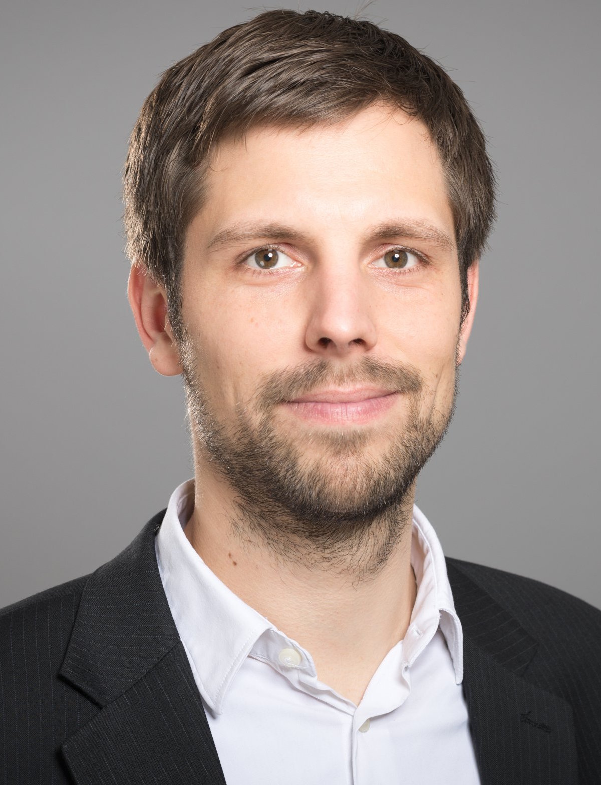

Henning Femmer is completing his Ph.D. at Technical University Munich, Germany. He has worked with various companies to increase requirements quality, including Daimler, MAN trucks and busses, Munich Re, and Wacker Chemicals. He published on requirements artifact quality, focussing on empirical evidence on the impact of bad quality and support for practitioners to write good quality artifacts. He has organized the AIRE’16 workshop at RE’16, has served in the PC for RET and RE4Susy Workshops and reviewed for IEEE Software, TOSEM, ICSE, and others.